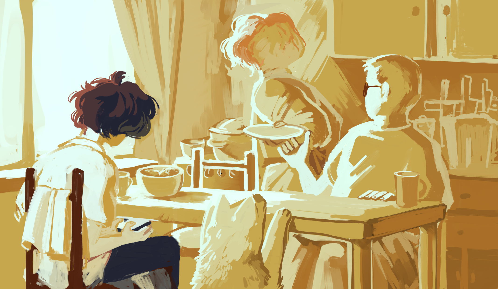

Новые сообщения
сегодня

Подробнее
Я удалил последнее сообщение, как с утра перечитал. Ну и кринж, блять.
Слишком сильно впечатлился вестями.
Ты, небось, даже читать не стала, просто посмотрела на превью и смахнула, ждешь, пока я опять начну по-человечески разговаривать. Вот, разговариваю по-человечески.
Сейчас завтрак. Ем с семьей. Обсуждаем последние новости. Говорят, у вас один погибший. Не верится, конечно, но стало чуть полегче. Знаешь, я-то вчера тебе свою индульгенцию на панике накатал, поэтому…
Я много думал ночью, и мне правда жаль, что я наговорил тебе какой-то хуйни. Не вчерашнее сообщение, а знаешь… ну, до этого. Прости пожалуйста.
Ради справки: я правда написал тебе песню. И мне правда страшно, что ты молчишь. До сих пор.
Надеюсь, ты просто издеваешься надо мной с неведимки.
С другой стороны, а как ещё, ты ведь не то что бы самый политически активный гражданин мира. С чего бы кому-то тебя трогать вообще. Господи, если ты вот сейчас читаешь эти строки и смеешься надо мной, я даже не знаю, лично приеду к тебе под подъезд и буду злобно сверлить входную дверь. Ну знаешь. Ты же говорила, домофон не работает, вдруг смогу сломить взглядом железо. Или призову из дома твоих соседей на помощь силами агрессивной телепатии.
Я думал, мы больше никогда не заговорим после нашего срача, и теперь мне страшно, что это правда случится, уже по другой причине. Поэтому если ты там реально хохочешь, дай знать, посмейся в лицо, пошли меня за доебчивость нахуй, в конце-то концов. Блять, я опять себя накручиваю. Стоит прекратить писать, но мне страшно затыкаться, страшно отправлять сообщение, вообще если честно страшно заходить в интернет.
Не знать еще страшнее.
За тавтологию не извиняюсь, сама попробуй подобрать тут синонимы, пока печатаешь одной рукой под столом. И вообще не умею я красиво разговаривать, тупо по фактам. Вот тупо по факту, мне вроде сегодня надо куда-то съездить, что-то там отдать. Уточню у своих.
Прикинь, какое полотно мне пришлось написать, лишь бы увильнуть от прямых извинений за всё своё говно. Хоть усилия оцени, пожалуйста,
и прочитай что-нибудь.